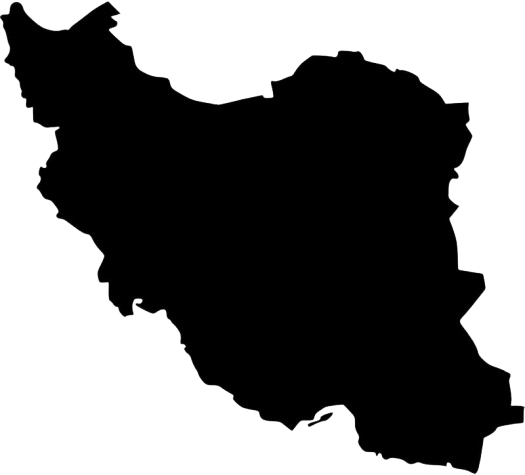

Homepagina
Homepagina
Hallo en welkom op mijn unieke website!
Mijn naam is Parsa, ik ben 17 jaar en ik woon al 6 jaar in Leiden. Ik ben geboren in Teheran, Iran op 25 september 2007.

Ik zit in 4 havo op het Vlietland College, waar ik het vakkenpakket Economie en Maatschappij heb gekozen.
Vakkenpakket Economie en Maatschappij:
• Bedrijfseconomie
• Bewegen & sport
• Culturele & kunstzinnige vorming
• Economie
• Geschiedenis
• Informatica
• Levensbeschouwing ethiek en filosofie
• Maatschappijleer
• Nederlandse taal en literatuur
• Wiskunde A